アセンブリドキュメントを開き、DFMPro メニューをクリックします。
DFMPro メニュー内の
 Start DFMPro をクリックして、ユーザーインターフェースを開きます。
Start DFMPro をクリックして、ユーザーインターフェースを開きます。プロファイルタブから、DFMPro 解析を実行するために Assembly を選択します。
DFMPro には、事前に構成された組織固有の製造プロセスおよびルールファイルを使用して、ワンクリックで DFMPro 解析を実行できるオプションが用意されています。この設定で Enable Profile Execution をクリックすると、ユーザーは必要なプロファイル構成を選択でき、ルールファイルや製造プロセスの誤った選択を回避できます。
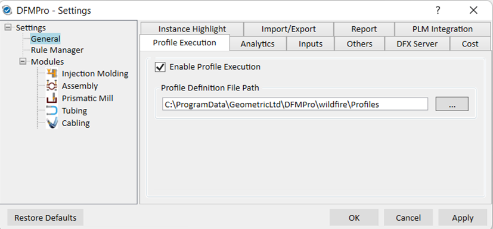
DFMPro 設定
DFMPro は、ミーリング、板金、アセンブリ向けにデフォルトのプロファイル構成を提供します。ユーザーは、同一セッション内で異なる解析用に複数の事前構成済み製造プロセスを追加することもできます。また、必要に応じてデフォルト以外の単一または複数のプロファイル構成を追加できます。DFMProfile.config ファイルは、以下の場所に配置されています。
C:\ProgramData\GeometricLtd\DFMPro\wildfire\Profiles
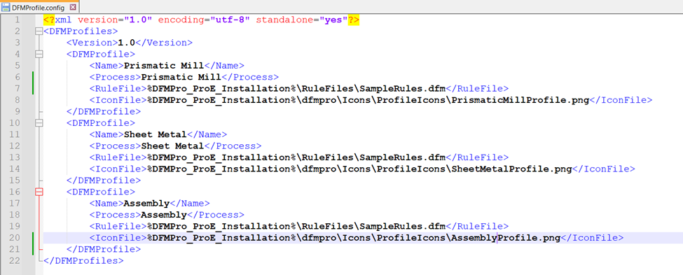
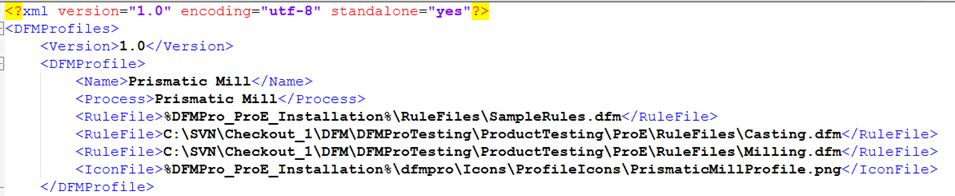
注記:
DFMPro ユーザーインターフェースのプロファイルタブに新しいプロファイルを追加するには、標準の構成フォーマットに従う必要があります（上記の画像を参照）。各プロファイルに対して、必要に応じて複数のルールファイルを構成できます。エラーを防ぐため、設定ファイル内に誤ったパスや名前を記載しないことを推奨します。
DFMPro 設定で Enable Profile Execution が選択されている場合、DFMPro ユーザーインターフェースにプロファイルタブが表示されます。
これが未選択の場合、DFMPro は通常どおり動作します（従来の動作）。
注記:
デフォルトでは、DFMPro 設定ダイアログボックス内の Enable Profile Execution チェックボックスは未選択です。
プロファイルタブから、DFMPro 解析を実行するために必要なプロファイルを選択できます。
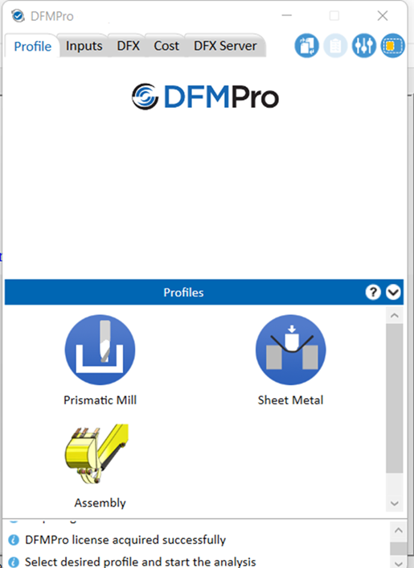
プロファイルタブ
注記:
追加されたルールファイルのパスまたは名前が一致しない場合、プロファイル選択時に、該当するパスまたは名前が正しくないことを示す警告メッセージが表示されます。例:
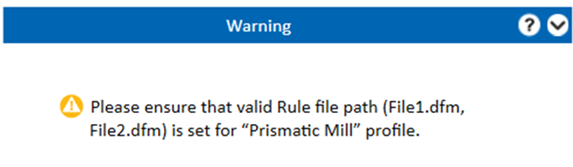
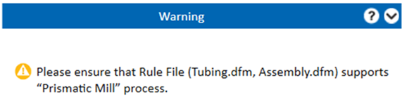
構成ファイルで定義されたプロファイルに基づき、DFMPro ユーザーインターフェースのプロファイルタブにそれらが表示されます（上記の DFMPro UI 画像を参照）。
プロファイルタブでプロファイルを選択すると、引き抜き方向を定義するための エンティティ選択 グループボックスが表示されます。
User Inputs グループボックスはグレーアウトされます。組織でプロファイル実行が有効になると、ユーザー入力のドロップダウンオプションは無効化されます。
ユーザーは User Inputs グループボックスを使用して解析を実行することはできません。
製造プロセスおよびルールファイルは、プロファイル構成ページから自動的に読み込まれます。
これにより、組織は組織固有の製造プロセスとそのルールファイルのみを構成できます。
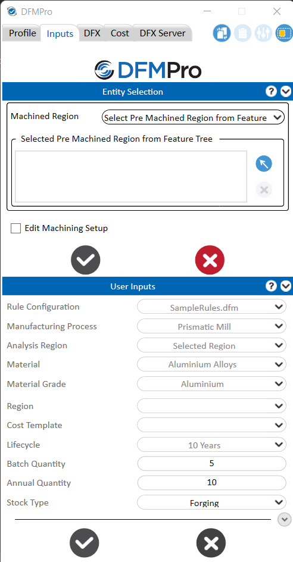
複数のルールファイルが追加されている場合、プロファイルタブからプロファイルを選択すると、User Inputs グループボックスが表示されます。このグループボックスでは、ルール構成ドロップダウンメニューから必要なルールファイルを選択できます。
選択したルールファイルにマテリアルデータベースをサポートするルールが含まれている場合、Material および Material Grade オプションが有効になり、必要な材料情報を更新できます。
詳細を更新した後、Analyze ボタンをクリックすると、引き抜き方向を定義するための エンティティ選択 グループボックスが表示されます。製造プロセスおよびルールファイルは、プロファイル構成ページから自動的に読み込まれます。
これにより、組織は組織固有の製造プロセスとそのルールファイルのみを構成できます。
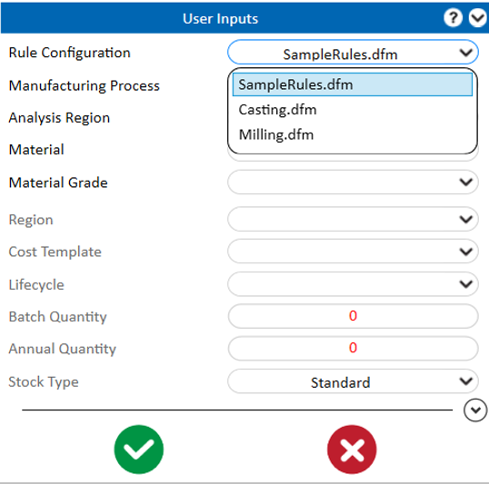
注記:
ルールファイルでアセンブリ、チューブ、ケーブル、および溶接ルールが選択されている場合、アセンブリモジュールによるマルチプロセス解析 のワークフローがサポートされます。
モデルに鋳造・機械加工領域が含まれている場合は、複数プロセスによる解析 がサポートされます。
DFMPro 設定 で Allow server analysis および Assembly Preselection Option が選択されている場合、ユーザーは DFX サーバ上でプロファイル実行による DFMPro 解析を実行できます。この場合、解析実行時に Server および Local オプションが表示されます。
アセンブリドキュメントを開き、DFMPro メニューをクリックします。
DFMPro メニュー内の Start DFMPro をクリックして、ユーザーインターフェースを開きます。
プロファイルタブから、DFMPro 解析を実行するために Assembly を選択します。
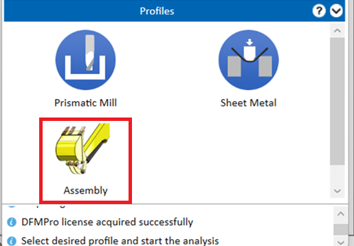
表示された User Inputs グループボックスで、選択に応じてローカルまたはサーバでの解析実行が可能です。
Local オプションが選択されている場合、解析はローカルマシンで実行されます。
Server オプションが選択されている場合、解析は DFX サーバ 上で実行されます。
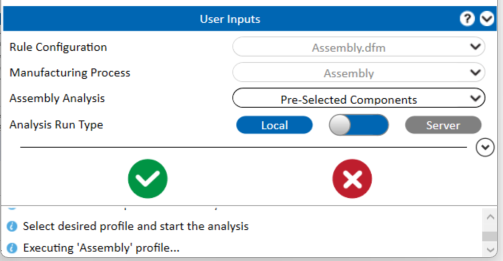
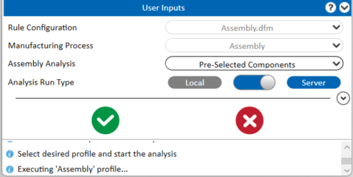
Entire Assembly または Pre-Selected Components の解析オプションを選択することもできます。
Entire Assembly が選択されている場合、解析はアセンブリ全体に対して実行されます。
Pre-Selected Components が選択されている場合、解析は選択されたコンポーネント／サブアセンブリに対して実行されます。
 Analyze ボタンをクリックすると、必要なコンポーネント／サブアセンブリを選択するための コンポーネント選択グループボックス が表示されます。
Analyze ボタンをクリックすると、必要なコンポーネント／サブアセンブリを選択するための コンポーネント選択グループボックス が表示されます。
Entire Assembly または Pre-Selected Components のいずれかで解析実行タイプとして Server が選択されている場合、解析は DFX サーバ 上で実行されます。